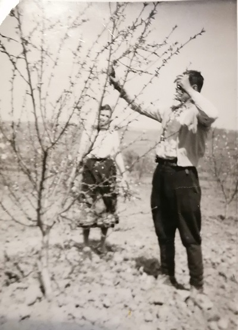

Početak
Naša priča intezivne voćarske proizvodnje traje više od 70 godina, kroz 4 generacije. Krajem 40-tih godina zasađene su prve velike površine jagoda sa tada novim, uveženim sortama. Početkom 54-te godine naša porodica kreće sa podizanjem zasada breskvi, do danas je to najzastupljenija vrsta voća koju gajimo. Mi cenimo voćarstvo kao način života i zanimanje koje radimo zajedno kao porodica. Ponosni smo na trud koji ulazemo kada vidimo osmehe zadovoljnih mušterija.
Biti uporan

Mnogo toga smo prošli i preživeli kao porodica kroz decenije bavljenja voćarstvom. Uz veliki uložen trud, bilo je i uspeha ali padova i katastrofa što bavljenje poljoprivredom nosi. Posle prvog branja jagoda te 74-te godine, početkom juna meseca, pala je velika količina grada i uništila sav trud koji je uložen te sezone. Led je uništio i zasade breskvi, skinuvši listove i ogulivši koru stabala. To je bio najteži izazov sa kojim smo se suočili do sada. Oslanjajući se jedni na druge, uz slogu i napore, naša porodica je prebrodila teške godine i sačuvala zemlju. Nismo prodali nijedan plac, nijedan ar u tako teškoj situaciji, što je izuzetan poduhvat do dana današnjeg.
Cilj
Težimo ka tome da sučavamo kvalitet voća koje nudimo iz godine u godinu. Kalemimo iznova stare sorte voća, čuvajući asortiment. Voće se bere u punoj zrelosti, više puta, kada poneki plod opadne sa drveta. Za nas je uspeh što ljudi vole naš produkt, kupuju od nas cele sezone, i vraćaju se sledeće. Da li Vam treba breskva za jelo, za džem, sok, kompot ili kolače, kod nas je cele sezone bar jedna sorta zrela.